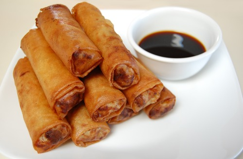

Lumpia

Filipino pork lumpia, or lumpiang shanghai, is a beloved Filipino
dish characterized by its delectable blend of flavors. These slender
spring rolls feature a savory filling of minced pork, carrots, onions,
and seasonings, wrapped in a thin, crispy shell. When deep-fried to a
golden perfection, they become a delightful, finger-friendly treat.
Served with a tangy dipping sauce made from vinegar, soy sauce, and
garlic, these lumpia are a culinary delight, perfect for sharing with
family and friends, and a beloved staple in Filipino cuisine.
Ingredients
- 1 pound ground chicken or pork
- ½ cup green onions, finely chopped
- 1 can (8 ounces) water chestnuts, drained and finely chopped
- 1 medium carrot, peeled and shredded
- 3 cloves garlic, peeled and minced
- 1 tablespoon soy sauce
- 1 teaspoon salt
- ½ teaspoon ground black pepper
- 20 pieces spring roll wrappers
- canola oil
Steps
- In a bowl, combine ground chicken, green onions, water chestnuts, carrots, garlic, soy sauce, salt, and pepper until well distributed.
- Separate wrappers into individual sheets and lay on a flat working surface.
- Spoon about 1 heaping tablespoon of meat mixture on the lower end of the wrapper, closest to you.
- Fold the bottom of wrapper over filling and continue to roll tightly into a thin log about ¾-inch thick. Wet the remaining edge of the wrapper with a dab of water to completely seal.
- Repeat with the remaining mixture. Using scissors, cut each lumpia roll into about 3-inch lengths.
- In a pan over medium heat, heat about 2-inch deep of oil. Add lumpia in batches and cook turning on sides as needed, for about 3 to 4 minutes or until golden brown and crisp and meat is cooked through.
- Using a slotted spoon or tongs, remove from the oil and drain on a wire rack set over a baking sheet. Serve immediately with sweet and sour sauce or banana ketchup.